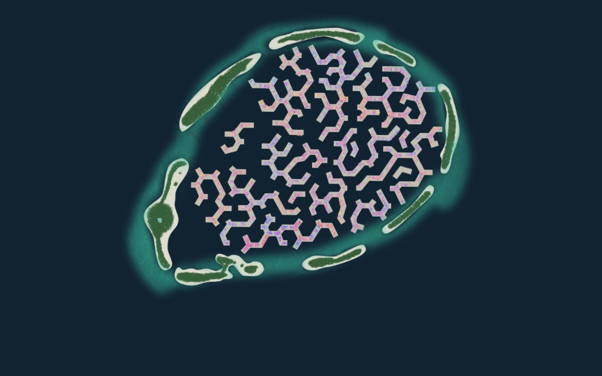
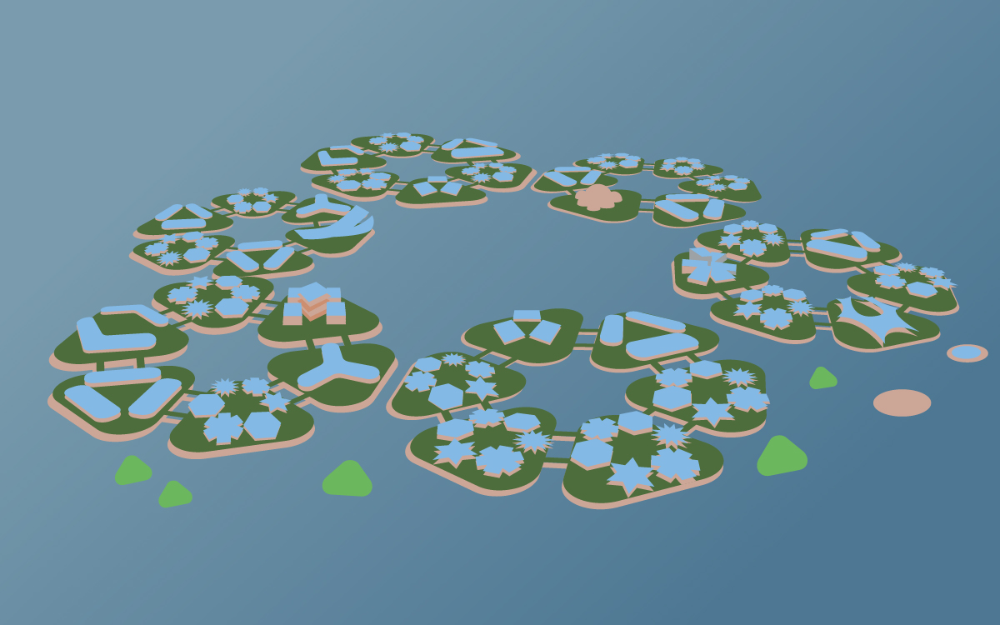
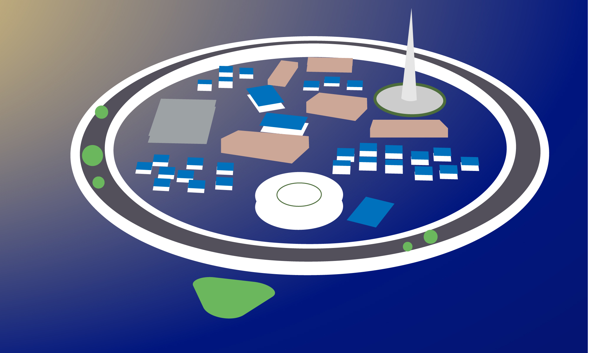

Seabnb
Explore and Rate Floating Cities!

Skip

Choose a Floating City!
Are you sure you're done exploring?
Maldives Floating City
Oceanix Busan
Dogen City

Maldives Floating City
Hello, and welcome to Maldives Floating City! Thank you for coming all this way, allow me to give a brief introduction of the city and all its features.
The Maldives Floating City is located in a warm-water lagoon, just 10 minutes by boat from our capital city and its international airport.
As you can see, this city has a very unique design, with thousands of floating homes, and a structure of water canals and roads that was based on brain coral.
Designing the city after brain coral was part of our dedication to living with nature and respecting natural coral.
This community is a reflection of the Maldivian cultural lifestyle, which has always been connected to the sea.
That's all from me. Do you have any further questions about this city?
As you may have noticed, the city is surrounded on all sides by various “barrier islands” These islands act as breakers below the water, lowering the intensity of any waves.
We also plan to have artificial coral reefs growing underneath the city that will also act as a breaker. The urban grid the city is built on will also adapt to the changing environment.
Do you have any other questions?
The city is characterized as a boating city, with said boats moving through the city’s canals to reach different parts of the city.
Land-based movements are limited to walking, biking, and using noise-free buggies or scooters. Cars are not allowed in Maldives Floating City, unfortunately.
Do you have any other questions?
The Maldives Floating City has minimal impact on surrounding coral reefs, as it doesn’t require any land reclamation.
In addition, artificial coral banks are attached to the underside of the city, creating more coral reefs. In terms of energy usage, renewable energy is provided through the city’s smart grid
Do you have any other questions?
Oceanix Busan

Greetings from South Korea, and welcome to Oceanix Busan! I’ll give an introduction on this city. Oceanix Busan is a resilient and sustainable floating community.
Busan is a resilient and sustainable floating community. It is made up of various hexagonal floating platforms that are interconnected.
There are 3 types of platforms in Oceanix Busan: lodging platforms, research platforms, and living platforms.
Currently it can hold up to 10,000 residents over 75 hectares, but with its modular design, it can expand its total area for more residents.
It is our answer to rising sea levels, and we hope that multiple versions of this city can be made.
Now that the introduction is finished, do you have any questions about this city?
The platform, made of durable materials such as concrete and steel, are designed to withstand wind, waves, and currents.
The platforms are also able to rise and fall as water levels fluctuate with adjustable tanks and floating foundations.
In the case of a severe storm, the whole city can be transported to a different location as well.
Do you have any other questions?
The city will use renewable energy from solar power, wind power, and hydroelectric power. The city aims to have net-zero energy use.
For food, fresh seafood is sourced from the city’s underwater bioreefs, and organic produce cultivated from high-tech greenhouses and hydroponic towers.
The city also uses a closed-loop processing system, where waste is converted to energy, recycled materials, and feedstock for agriculture.
Do you have any other questions?
Our city strives to be fully sustainable, with net-zero energy and waste systems.
In addition, the city uses a special material called Biorock in its construction that adheres to the underside of the city platforms and can rebuild itself.
It protects steel from corroding, while protecting marine ecosystems from erosion and allowing them to regenerate.
Do you have any other questions?
Dogen City

Hello, it's nice to meet you! Allow me to speak about Dogen City.
Dogen City is a Japanese “smart healthcare city” developed by N-ARK. It is 1.58 km (0.98 miles) and 4 km (2.46 miles) in circumference, housing about 10,000 residents in total.
Dogen City is made up of three primary infrastructures: the Habitable Ring, Autonomous Floating Architecture, and the Undersea Data Center.
The first infrastructure, the Habitable Ring, forms a circular barrier around the city and is the main location for public housing for its residents.
The second is the Autonomous Floating Architecture that can move and reconfigure themselves freely to meet on-demand adaptations.
The third is Undersea Data Center, which provides the city OS as well as healthcare data and drug discovery simulation.
As a smart healthcare city, Dogen City’s primary focus is to do health and medicine research, but acts as a stand-alone city in the event of a natural disaster.
If you have any questions, feel free to ask them now!
The Habitable Ring goes around the circumference of the city. It has a levee function that acts as a barrier against tsunamis all around the city, protecting the people and infrastructure inside.
Public housing is located above and below the water’s surface, with a walkway also being located above the water’s surface.
Do you have any other questions?
The inner city has floating facilities for food production, as well as research and development labs, schools, security centers, offices, food and drink shops, and merch shops.
It has a few parks and mobile islands, a stadium, and a multitude of residential hotels. There are ships available for transporting people to and from these facilities.
Do you have any other questions?
Dogen City uses aquaponics to grow vegetables on the water, using humidity to reproduce a soil environment, and seawater as a source of nutrients. The city can produce 6,862 tons of food annually.
The city uses renewable energy such as solar panels and wind turbines above the water’s surface to generate 22,265,000 kW of electricity per year.
Do you have any other questions?
Which floating city will you live in?
Maldives Floating City
Oceanix Busan
Dogen City